자동차정비기사 (2018-08-19 기출문제)
1과목: 일반기계공학
1. 다음 중 볼 스크루의 장점이 아닌 것은?
- 자동체결이 용이하다.
- 나사의 효율이 좋다.
- 백래시를 작게 할 수 있다.
- 높은 정밀도를 유지할 수 있다.
(정답률: 56%)

2. 유체기계에서 발생하는 공동현상(cavitation)의 방지법으로 옳지 않은 것은?
- 양흡입 펌프를 사용한다.
- 펌프의 회전수를 높여 흡입 비속도를 크게 한다.
- 밸브, 플랜지 등 부속품의 수를 적게 하여 손실수두를 줄인다.
- 펌프의 설치높이를 가능한 낮추어 흡입양정을 짧게 한다.
(정답률: 61%)
3. 직사각형 단면인 단순보의 중앙에 집중하중이 작용할 때 최대 처짐량에 대한 설명으로 옳은 것은?
- 단면의 폭에 비례한다.
- 보의 길이에 반비례한다.
- 집중하중의 크기에 반비례한다.
- 단면의 높이의 3제곱에 반비례한다.
(정답률: 61%)
4. 성능이 같은 두 대의 펌프를 병렬 운전할 때 옳은 것은?
- 유량, 양정 모두 변화 없음
- 유량, 양정 모두 2배로 증가
- 양정은 변함없고, 유량은 2배로 증가
- 유량은 변함없고, 양정은 2배로 증가
(정답률: 65%)
5. 직경이 20cm와 30cm의 파이프가 수직으로 직결되어 있다. 직경 30cm 파이프 내의 유속이 3.6m/s 이면 직경 20cm 파이프 내의 유속은 약 몇 m/s인가?
- 7.2
- 8.1
- 9.6
- 12.0
(정답률: 48%)
6. 두 장의 판의 간격을 유지하면서 체결할 때 사용하는 볼트는?
- 기초 볼트
- 나비 볼트
- 아이 볼트
- 스테이 볼트
(정답률: 66%)
7. 주조용 원형(목형)에 라운딩을 하는 이유로 적절한 것은?
- 목형을 아름답게 하기 위하여
- 기계가공이 필요할 때 치수여유를 주기 위하여
- 원형을 주형에서 뽑아 낼 때 주형의 파손을 방지하기 위하여
- 주물의 두께가 일정하지 않아 냉각속도를 일정하게 하기 위하여
(정답률: 66%)
8. 나사 측정에서 삼침법이란 기본적으로 나사의 무엇을 측정하는 방법인가?
- 피치
- 외경
- 골지름
- 유효지름
(정답률: 47%)
9. 피치원의 지름이 240mm, 잇수 48인 스퍼기어의 원주 피치는 약 몇 mm인가?
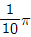
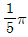
- 5π
- 10π
(정답률: 62%)
10. 소성 가공에서 드로잉 저항의 크기와 관계없는 것은?
- 인발속도
- 스프링 백
- 단면감소율
- 다이 구멍의 각도
(정답률: 51%)
11. 속이 찬 원형 축의 지름이 40mm인 연강재가 200r/min으로 7.5kW의 동력을 전달할 때 생기는 전단응력은 약 몇 N/cm2인가?
- 900
- 1450
- 1800
- 2850
(정답률: 20%)
12. 상온에서 탄소강의 탄소함유량이 증가할수록 증가하는 기계적 성질은?
- 연신율
- 충격치
- 인장강도
- 단면 수축률
(정답률: 57%)
13. Cu에 Ni를 40%~45% 합금한 재료로 온도변화에 영향을 많이 받으며, 전기 저항성이 커서 저항선이나 전열선, 열전쌍의 재료로 사용되는 것은?
- 인바
- 엘린바
- 모넬메탈
- 콘스탄탄
(정답률: 47%)
14. 전동축의 전달 동력을 H(kW), 회전수가 N(r/min)이라 하면 비틀림 모멘트 T(Nㆍm)는?
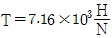
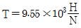
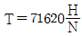
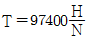
(정답률: 43%)
15. 탄성 한도 내에서의 세로 변형률과 가로 변형률과의 비를 무엇이라고 하는가?
- 곡률
- 세장비
- 단면수축률
- 포와송 비
(정답률: 73%)
16. 철강재 스프링 재료의 구비조건으로 옳지 않은 것은?
- 경도가 높아야 한다.
- 부식에 강해야 한다.
- 높은 응력에 견딜 수 있어야 한다.
- 피로강도와 파괴인성치가 높아야 한다.
(정답률: 62%)
17. 다음 중 용접부를 피닝(peening)하는 이유로 가장 적절한 것은?
- 용접부의 도료를 제거하기 위해
- 용접부의 재질을 검사하기 위해
- 용접부의 인장응력을 완화하기 위해
- 용접부의 잔류응력을 증가시키기 위해
(정답률: 54%)
18. 서로 직각한 2방향에서 수직응력 σx, σy가 작용할 때 θ = 45° 단면에 생기는 최대전단응력은?
- 1/2(σx - σy)
- 1/2(σx + σy)
- 1/2(σx - σy)cos2θ
- 1/2(σx + σy)cos2θ
(정답률: 35%)
19. 열경화성 수지에 해당하는 것은?
- 페놀수지
- 아크릴 수지
- 염화비닐수지
- 폴리에틸렌수지
(정답률: 49%)
20. 드릴로 뚫은 구멍의 중심위치에 맞게 다듬질 절삭하거나 구멍을 넓혀서 정확한 치수로 절삭하는 공작기계는?
- 세이퍼
- 보링 머신
- 플레이너
- 호빙 머신
(정답률: 70%)
2과목: 기계열역학
21. 그림과 같이 카르노 사이클로 운전하는 기관 2개가 직렬로 연결되어 있는 시스템에서 두 열기관의 효율이 똑같다고 하면 중간 온도 T는 약 몇 K 인가?
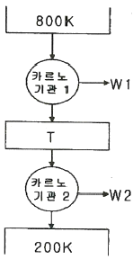
- 330K
- 400K
- 500K
- 660K
(정답률: 53%)
22. 이상적인 디젤 기관의 압축비가 16일 때 압축전의 공기 온도가 90℃ 라면, 압축후의 공기의 온도는 약 몇 ℃인가? (단, 공기의 비열비는 1.4이다.)
- 1101℃
- 718℃
- 808℃
- 828℃
(정답률: 35%)
23. 두 물체가 각각 제3의 물체와 온도가 같을 때는 두 물체도 역시 서로 온도가 같다는 것을 말하는 법칙으로 온도측정의 기초가 되는 것은?
- 열역학 제0법칙
- 열역학 제1법칙
- 열역학 제2법칙
- 열역학 제3법칙
(정답률: 47%)
24. 500℃의 고온부와 50℃의 저온부 사이에서 작동하는 Carnot 사이클 열기관의 열효율은 얼마인가?
- 10%
- 42%
- 58%
- 90%
(정답률: 51%)
25. 공기의 정압비열(Cp, kJ/(kgㆍ℃))이 다음과 같다고 가정한다. 이때 공기 5kg을 0℃에서 100℃까지 일정한 압력하에서 가열하는데 필요한 열량은 약 몇 kJ인가? (단, 다음 식에서 t는 섭씨온도를 나타낸다.)
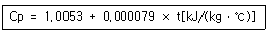
- 85.5
- 100.9
- 312.7
- 504.6
(정답률: 32%)
26. 공기 표준 사이클로 운전하는 디젤 사이클 엔진에서 압축비는 18, 체절비(분사 단절비)는 2일 때 이 엔진의 효율은 약 몇 %인가? (단, 비열비는 1.4이다.)
- 63%
- 68%
- 73%
- 78%
(정답률: 33%)
27. 다음 중 이상적인 스로틀 과정에서 일정하게 유지되는 양은?
- 압력
- 엔탈피
- 엔트로피
- 온도
(정답률: 43%)
28. 70kPa에서 어떤 기체의 체적이 12m3이었다. 이 기체를 800kPa까지 폴리트로픽 과정으로 압축했을 때 체적이 2m3으로 변화했다면, 이 기체의 폴리트로프 지수는 약 얼마인가?
- 1.21
- 1.28
- 1.36
- 1.43
(정답률: 41%)
29. 이상기체의 가역 폴리트로픽 과정은 다음과 같다. 이에 대한 설명으로 옳은 것은? (단, P는 압력, v는 비체적, C는 상수이다.)
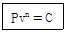
- n = 0 이면 등온과정
- n = 1 이면 정적과정
- n = ∞ 이면 정압과정
- n = k(비열비) 이면 단열과정
(정답률: 50%)
30. 카르노 냉동기 사이클과 카르노 열펌프 사이클에서 최고 온도와 최소 온도가 서로 같다. 카르노 냉동기의 성적 계수는 COPR이라고 하고, 카르노 열펌프의 성적계수는 COPHP라고 할 때 다음 중 옳은 것은?
- COPHP+COPR=1
- COPHP+COPR=0
- COPR-COPHP=1
- COPHP-COPR=1
(정답률: 34%)
31. 클라우지우스(Clausius) 적분 중 비가역 사이클에 대하여 옳은 식은? (단, Q는 시스템에 공급되는 열, T는 절대 온도를 나타낸다.)
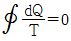
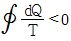
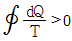
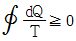
(정답률: 55%)
32. 밀폐시스템에서 초기 상태가 300K, 0.5m3인 이상기체를 등온과정으로 150kPa에서 600kPa까지 천천히 압축하였다. 이 압축과정에 필요한 일은 약 몇 kJ인가?
- 104
- 208
- 304
- 612
(정답률: 24%)
33. 역카르노 사이클로 운전하는 이상적인 냉동사이클에서 응축기 온도가 40℃, 증발기 온도가 -10℃이면 성능 계수는?
- 4.26
- 5.26
- 3.56
- 6.56
(정답률: 44%)
34. 이상기체가 등온과정으로 체적이 감소할 때 엔탈피는 어떻게 되는가?
- 변하지 않는다.
- 체적에 비례하여 감소한다.
- 체적에 반비례하여 증가한다.
- 체적의 제곱에 비례하여 감소한다.
(정답률: 42%)
35. 열과 일에 대한 설명 중 옳은 것은?
- 열역학적 과정에서 열과 일은 모두 경로에 무관한 상태함수로 나타낸다.
- 일과 열의 단위는 대표적으로 Watt(W)를 사용한다.
- 열역학 제1법칙은 열과 일의 방향성을 제시한다.
- 한 사이클 과정을 지나 원래 상태로 돌아왔을 때 시스템에 가해진 전체 열량은 시스템이 수행한 전체 일의 양과 같다.
(정답률: 45%)
36. 어떤 기체 1kg이 압력 50kPa, 체적 2.0m3의 상태에서 압력 1000kPa, 체적 0.2m3의 상태로 변화하였다. 이 경우 내부에너지의 변화가 없다고 한다면, 엔탈피의 변화는 얼마나 되겠는가?
- 57kJ
- 79kJ
- 91kJ
- 100kJ
(정답률: 33%)
37. 압력 250kPa, 체적 0.35m3의 공기가 일정 압력 하에서 팽창하여, 체적이 0.5m3로 되었다. 이 때 내부에너지의 증가가 93.9kJ이었다면, 팽창에 필요한 열량은 약 몇 kJ인가?
- 43.8
- 56.4
- 131.4
- 175.2
(정답률: 48%)
38. 이상기체가 등온 과정으로 부피가 2배로 팽창할 때 한 일이 W1 이다. 이 이상기체가 같은 초기조건 하에서 폴리트로픽 과정(지수=2)으로 부피가 2배로 팽창할 때 한 일은?
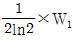
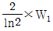
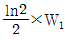
- 2ln2×W1
(정답률: 39%)
39. 에어컨을 이용하여 실내의 열을 외부로 방출하려 한다. 실외 35℃, 실내 20℃인 조건에서 실내로부터 3kW의 열을 방출하여 할 때 필요한 에어컨의 최소 동력은 약 몇 kW인가?
- 0.154
- 1.54
- 0.308
- 3.08
(정답률: 37%)
40. 랭킨 사이클의 각각의 지점에서 엔탈피는 다음과 같다. 이 사이클의 효율은 약 몇 %인가? (단, 펌프일은 무시한다.)
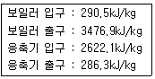
- 32.4%
- 29.8%
- 26.7%
- 23.8%
(정답률: 36%)
3과목: 자동차기관
41. 왕복형 내연기관에 대한 설명으로 틀린 것은?
- 행정체적을 간극체적으로 나눈 비율을 압축비라고 한다.
- 상사점과 하사점 간의 피스톤 이동 거리를 행정이라 한다.
- 피스톤이 상사점에 도달했을 때 실린더 내부의 최소체적을 간극체적이라고 한다.
- 피스톤의 왕복운동 중 실린더 체적이 최소가 되는 피스톤 위치를 상사점이라 한다.
(정답률: 40%)
42. 윤활유가 갖추어야 할 조건으로 틀린 것은?
- 점도가 적당할 것
- 인화점과 발화점이 낮을 것
- 열과 산에 대하여 안정성이 있을 것
- 카본 생성에 대한 저항력이 있을 것
(정답률: 57%)
43. 블로우 다운(blow down) 현상에 대한 설명으로 옳은 것은?
- 흡기 또는 배기밸브에서 밀착 불량으로 폭발이나 압축 시 가스가 새는 현상
- 흡기와 배기효율을 높이고자 상사점 부근에서 두 밸브가 동시에 열려있는 현상
- 피스톤링과 실린더 사이에서 압축행정이나 폭발행정 시 가스가 새는 현상
- 동력행정 말기에 배기밸브가 열리면 연소가스가 자체 압력으로 배출되는 현상
(정답률: 42%)
44. 전자식 가변용량 터보차저(VGT)에서 목표 부스트압력을 결정하기 위한 입력요소와 가장 거리가 먼 것은?
- 연료 압력
- 부스트 압력
- 가속페달 위치
- 엔진 회전속도
(정답률: 35%)
45. 전자제어 가솔린엔진에서 공기가 흡입되는 관로 내에 설치된 기둥에 의해 발생한 공기의 소용돌이를 통해 흡입공기량을 계측하는 방식은?
- 열선식
- 열막식
- 맵센서식
- 칼만와류식
(정답률: 58%)
46. 가솔린엔진(MPI)의 산소센서에 대한 설명으로 옳은 것은?
- 센서의 최고 출력전압은 배터리의 전압과 동일하다.
- 이론공연비로 조절하기 위한 피드백 신호를 보낸다.
- 흡기관과 배기관에 각각 설치되어 산소의 농도를 비교 검출한다.
- 배기가스 중의 산소를 흡수하여 흡기관으로 보내기 위한 신호를 보낸다.
(정답률: 45%)
47. 가솔린엔진의 성능에 관계되는 연료의 특성만으로 짝지어진 것은?
- 비중, 세탄가, 증기압, 기화성
- 비중, 세탄가, 옥탄가, 기화성
- 비중, 기화성, 증기압, 옥탄가
- 비중, 증류성상, 세탄가, 옥탄가
(정답률: 48%)
48. 전자제어 디젤엔진에서 커먼레일 방식 분사장치의 특징에 대한 설명으로 틀린 것은?
- 파일럿 분사가 가능하다.
- 운전 상태의 변화에 따라 분사압력이 제어된다.
- ECU가 분사량, 분사시간 등을 조절하여 출력을 향상시킨다.
- 최대 분사압력을 800bar 정도로 유지하여 유해배기가스를 줄인다.
(정답률: 41%)
49. 밸브스프링의 서징현상을 방지하는 방법으로 틀린 것은?
- 원뿔형 스프링을 사용한다.
- 부등피치 스프링을 사용한다.
- 장력이 낮은 스프링을 사용한다.
- 고유진동수가 다른 2중 스프링을 사용한다.
(정답률: 56%)
50. 엔진의 흡입장치에서 흡입효율을 향상시키기 위한 방법으로 거리가 먼 것은?
- 과급장치 사용
- 밸브개폐시기 제어
- 배기장치의 배압감소
- 흡기다기관의 길이 및 단면적 고정
(정답률: 47%)
51. 전자제어 가솔린엔진(MPI)의 연료분사방식에 대한 설명 중 동시분사방식에 해당하는 것은?
- 엔진 1회전에 모든 실린더에 1회 연료 분사한다.
- 엔진 4회전에 모든 실린더에 1회 연료 분사한다.
- 인젝터별 최적의 타이밍으로 개별 연료 분사한다.
- 인젝터를 몇 개의 그룹으로 나누어 연료 분사한다.
(정답률: 48%)
52. 가솔린엔진에서 시동 시에 공급되는 연료의 혼합비에 대한 설명으로 옳은 것은?
- 시동과 혼합비는 관계없다.
- 이론공연비 보다 농후하다.
- 이론공연비 보다 희박하다.
- 정확한 이론공연비로 공급한다.
(정답률: 52%)
53. 가솔린 노크의 세기와 압축비에 관한 설명으로 옳은 것은?
- 압축비가 낮을수록 노크의 세기는 경감된다.
- 압축비가 높을수록 노크의 세기는 경감된다.
- 압축비가 낮아져도 노크의 세기는 일정하다.
- 압축비가 높아져도 노크의 세기는 일정하다.
(정답률: 45%)
54. 도시마력이 50PS이고, 기계효율이 80%인 엔진의 크랭크축 회전수가 2500rpm일 때 엔진 회전력은 약 몇 kgfㆍm인가?
- 6.35
- 9.14
- 11.46
- 15.15
(정답률: 32%)
55. 피스톤 슬랩현상을 방지하는 방법으로 틀린 것은?
- 피스톤 간극을 작게 한다.
- 오프셋 피스톤을 사용한다.
- 피스톤 링의 중량을 감소시킨다.
- 피스톤 링의 장력을 낮추어 저항을 줄인다.
(정답률: 40%)
56. LPG 자동차에서 베이퍼라이저의 역할로 틀린 것은?
- 액화가스를 감압시킨다.
- 액화가스를 기화시킨다.
- 액화가스의 압력을 일정하게 유지한다.
- 위험한 상황에서 액화가스를 차단한다.
(정답률: 42%)
57. 전자제어 가솔린엔진에서 워밍업이 완료되어 통상적인 연료분사 시, 인젝터의 분사시간을 산출하는 식으로 옳은 것은?
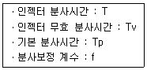
- T = Tv × f + Tp
- T = Tp × f + Tv
- T = 1/2(Tv × f) + Tp
- T = 1/2(Tp × f) + Tv
(정답률: 33%)
58. 가솔린엔진의 연료장치에서 베이퍼록이 발생하는 원인으로 가장 적절한 것은?
- 겨울철에 냉간 시동을 할 때
- 옥탄가가 낮은 연료를 사용하였을 때
- 연료펌프와 연료라인이 과열되었을 때
- 비등점이 너무 높은 연료를 사용하였을 때
(정답률: 47%)
59. 냉각장치에서 냉각수 비점을 높여주는 구성품은?
- 수온 조절기
- 라디에이어 캡
- 라디에이어 팬
- 라디에이어 냉각핀
(정답률: 50%)
60. 가솔린 연료탱크에서 발생한 증발가스를 흡수, 저장하는 구성품은?
- 캐니스터
- 블리더 호스
- 2차 공기 공급장치
- 퍼지 컨트롤 솔레노이드 밸브(PCSV)
(정답률: 51%)
4과목: 자동차새시
61. 주행 중 계속해서 조향핸들이 좌우로 떨리거나 특정속도(약 60~80km/h)구간에서 조향핸들의 떨림이 발생하는 고장 현상의 원인으로 가장 적절한 것은?
- 스테빌라이저 변형
- 타이어의 공기압 과다
- 라이닝 간극 조정 불량
- 타이어 휠 밸런스의 불량
(정답률: 49%)
62. 추진축에 대한 설명으로 틀린 것은?
- 비틀림과 굽힘에 대한 저항력이 커야 한다.
- 길이 변화에 대응한 스폴라인을 설치한다.
- 고속회전을 견딜 수 있는 강철봉(steel rod)이 사용된다.
- 일직선상에 있지 않은 두 축을 연결하는 데 자재이음을 사용한다.
(정답률: 43%)
63. 자동차정기검사에서 제동장치 검사기준에 대한 설명으로 틀린 것은?
- 모든 축의 제동력의 합은 공차중량의 50퍼센트 이상일 것
- 주차제동력의 합은 차량 중량의 50퍼센트 이상일 것
- 동일 차축의 좌ㆍ우 차바퀴 제동력의 차이는 해당 축중의 8퍼센트 이내일 것
- 각축의 제동력은 해당 축중의 50퍼센트(뒤축의 제동력은 해당 축중의 20퍼센트) 이상일 것
(정답률: 53%)
64. 차체자세제어장치(VDC, ESP)의 입력 요소가 아닌 것은?
- TPMS 센서
- 요 레이트 센서
- 조향휠 각속도 센서
- 마스터 실린더 압력 센서
(정답률: 46%)
65. 일반적인 타이어 공기압력 경고장치(TPMS)의 구성품이 아닌 것은?
- 저압 경고등
- 이니시에이터
- 타이어 압력 센서
- 가속 페달 위치 센서
(정답률: 52%)
66. 조향장치의 구비조건으로 틀린 것은?
- 고속주행에서도 조향핸들이 안정될 것
- 조향핸들 회전과 바퀴의 선회차이가 클 것
- 조향조작이 주행 중 충격에 영향을 받지 않을 것
- 회전반지름이 작아 좁은 곳에서 방향전환이 용이할 것
(정답률: 58%)
67. 자동변속기를 자기진단기로 점검 시 통신이 불가한 원인으로 틀린 것은?
- 진단기로의 전원공급이 불량하다.
- 제어기의 접지가 차체로부터 분리되었다.
- 통신 단자의 단락 또는 단선이 발생하였다.
- 센서 또는 액츄에이터의 공급전원이 불안하다.
(정답률: 41%)
68. 하이드로 플래닝 현상을 방지하기 위한 방법으로 거리가 먼 것은?
- 주행속도를 낮춘다.
- 타이어의 공기압력을 높인다.
- 러그형 패턴의 타이어를 사용한다.
- 트레드의 마모가 적은 타이어를 사용한다.
(정답률: 50%)
69. 자동차가 600m의 경사로를 올라가는 데 3분, 내려가는 데 1분 걸렸다면 평균속도는 몇 km/h인가?
- 15
- 16
- 17
- 18
(정답률: 33%)
70. 자동 차동제한기구의 종류가 아닌 것은?
- 다판 클러치식
- 할덱스 클러치식
- 토르젠 차동방식
- 스파이럴 기어식
(정답률: 32%)
71. 속도 108km/h로 달리던 자동차가 브레이크를 밟았을 때 제동거리는 약 몇 m인가? (단, 도로면과 타이어 사이의 마찰계수 0.5, 중력가속도 9.8m/s2, 제동율 100%이다.)
- 91.84
- 101.51
- 1⑤.84
- 110.51
(정답률: 30%)
72. 전자제어 현가장치(ECS)의 입ㆍ출력 요소에서 출력요소에 해당하는 것은?
- 차량의 높이를 감지하는 차고 센서
- 쇼크 업소버의 감쇠력을 변화시키는 액추에이터
- 주행 중 전조등의 점등을 알려주는 전조등 스위치
- 제동 시 다이브 제어의 기준 신호가 되는 브레이크 스위치
(정답률: 50%)
73. 주행 중 조향핸들이 한쪽 방향으로 쏠리는 직접적인 원인으로 거리가 먼 것은?
- 좌ㆍ우 타이어의 압력이 같지 않다.
- 조향핸들 축이 축 방향으로 유격이 크다.
- 앞차축 한쪽의 현가스프링이 절손되었다.
- 뒤차축이 차의 중심선에 대하여 직각이 되지 않는다.
(정답률: 47%)
74. 자동변속기 솔레노이드 밸브 종류가 아닌 것은?
- 유압제어용 밸브
- 변속제어용 밸브
- 유속제어용 밸브
- 댐퍼클러치제어용 밸브
(정답률: 52%)
75. ABS 장치의 휠스피드센서 파형점검에 사용되는 장비로 옳은 것은?
- 오실로스코프
- 전압계
- 디지털 멀티미터
- 전류계
(정답률: 52%)
76. 앞 타이어의 바깥쪽이 심하게 마모되었을 때, 휠얼라인먼트 조정 방법으로 옳은 것은?
- 캐스터를 크게 조정한다.
- 캐스터를 작게 조정한다.
- (+)캠버 방향으로 조정한다.
- (-)캠버 방향으로 조정한다.
(정답률: 49%)
77. 자동변속기에서 유압 조절 솔레노이드밸브의 듀티비란?
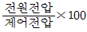
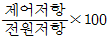
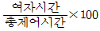
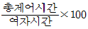
(정답률: 43%)
78. 수동변속기의 클러치 동력전달 용량에 대한 설명으로 옳은 것은?
- 용량이 크면 접촉충격이 적다.
- 엔진의 최고 회전토크보다 커야 한다.
- 마찰면적이 넓을수록 용량이 작아진다.
- 용량이 적을수록 효율이 좋아 내구성이 증대된다.
(정답률: 42%)
79. 독립현가장치 중 SLA형 현가장치에서 코일 스프링의 장착 위치는?
- 위 컨트롤 암과 프레임 사이
- 아래 컨트롤 암과 프레임 사이
- 아래 컨트롤 암과 위 볼 조인트 사이
- 아래 컨트롤 암과 위 컨트롤 암 지지대 사이
(정답률: 38%)
80. 제동장치에서 흡기다기관 부압과 대기압과의 압력 차를 이용한 진공식 배력장치의 종류가 아닌 것은?
- 마스터 백 방식
- 뉴 바이커 방식
- 압축 공기 방식
- 하이드로 마스터 방식
(정답률: 28%)
5과목: 자동차전기
81. 자동차용 배터리의 역할로 틀린 것은?
- 차량 시동 시 기동전동기에 전원을 공급한다.
- 발전기 고장 시 자동차의 주행을 확보하기 위해 전기를 공급한다.
- 발전기의 작동에 상관없이 자동차 전원을 계속적으로 공급하는 역할을 한다.
- 자동차의 주행상태에 따른 발전기의 출력과 부하와의 부조화를 조정하는 역할을 한다.
(정답률: 49%)
82. 기동전동기는 정상 회전하나 엔진이 크랭킹 되지 않을 때 고장 원인으로 가장 적합한 것은?
- 점화코일 불량
- 컨트롤 릴레이 불량
- 인히비터 스위치 불량
- 플라이 휠의 링 기어 파손
(정답률: 49%)
83. 자동차의 도난방지장치에 전원을 연결하기 위한 작업방법으로 가장 적절한 것은?
- 방향지시등과 병렬로 연결한다.
- 전조등 배선과 직렬로 연결한다.
- 브레이크 및 미등과 직렬로 연결한다.
- 배터리에서 공급되는 선과 직접 연결한다.
(정답률: 50%)
84. 자동차 편의장치인 와이퍼시스템에서 사용되는 모터의 종류가 아닌 것은?
- 공압식
- 분권식
- 복권식
- 영구자석식
(정답률: 39%)
85. 반도체의 장점으로 틀린 것은?
- 역내압이 낮다.
- 소형이고 경량이다.
- 내부 전력손실이 매우 적다.
- 응답성이 빠르고 수명이 길다.
(정답률: 56%)
86. 차량 안전운전 보조장치의 주요 구성품에 대한 설명으로 틀린 것은?
- 자동주차 보조장치(SPAS)는 초음파 센서, 전자식 조향모터 등으로 구성
- 차선이탈 경고장치(LDWS)는 초음파 센서와 전자식 조향모터 등으로 구성
- 정속 주행장치(ACC)는 전방감지센서, 엔진제어유닛, 전자식 제동유닛 등으로 구성
- 차선유지 보조장치(LKAS)는 전방 카메라, 조향각 센서, 전자식 조향모터 등으로 구성
(정답률: 39%)
87. 충전장치 정비 시 안전사항과 거리가 먼 것은?
- B단자를 분리한 후 엔진을 고속 회전하지 않는다.
- 배터리를 자동차에 장착 시 극성이 바뀌지 않도록 한다.
- 충전기를 사용하여 충전 시 시동키를 OFF한 후 배터리(-)를 분리한다.
- 엔진가동 상태에서 배터리(-)를 분리하여 발전기의 발전 상태를 확인한다.
(정답률: 51%)
88. 완전충전된 상태의 배터리가 방전종지전압까지 방전하는 데 걸린 전류와 시간이 20A, 5시간이고, 방전종지전압 상태에서 다시 완전 충전하는 데 걸린 전류와 시간이 15A, 8시간이라면 AH효율은 약 몇 %인가?
- 57
- 83
- 120
- 175
(정답률: 27%)
89. 코일의 상호유도 인덕턴스가 1.8H이고, 1차 코일에 2A의 전류를 0.2초 동안 변화시키면, 근접한 2차 코일에 유도되는 기전력은 몇 V인가?
- 6
- 12
- 18
- 24
(정답률: 39%)
90. 자동차 전조등의 광도가 30000cd일 때 10m 떨어진 지점의 조도는 몇 lx인가?
- 3
- 30
- 300
- 3000
(정답률: 45%)
91. 교류발전기의 내부구조에서 로터 철심의 역할은?
- 전압 강하방지
- 전류의 손실방지
- 자력의 손실방지
- 형태의 변화방지
(정답률: 40%)
92. 전자제어 점화장치(DLI)의 특징으로 틀린 것은?
- 실린더별 점화시기 제어가 가능하다.
- 고압 배전부가 없기 때문에 누전의 염려가 적다.
- DLI 방식에서는 파워 TR을 사용하지 않아도 된다.
- 배전기가 없기 때문에 점화에너지의 손실을 줄일 수 있다.
(정답률: 49%)
93. 반도체식 점화장치의 특성으로 틀린 것은?
- 저속성능이 안정된다.
- 고속성능이 향상된다.
- 점화장치의 응답성이 떨어진다.
- 점화시기를 정확하게 할 수 있다.
(정답률: 58%)
94. 고전압 배터리의 셀 밸런싱을 제어하는 장치는?
- MCU(Motor Control Unit)
- LDC(Low DC-DC Convertor)
- ECM(Electronic Control Module)
- BMS(Battery Management System)
(정답률: 55%)
95. 점화장치에서 페자로(몰드) 점화 코일의 특징으로 틀린 것은?
- 내열성이 우수하다.
- 1차 전류가 증가되며 자속이 감소한다.
- 자속이 외부로 방출되는 것을 최소화시켰다.
- 1차 코일의 지름을 굵게 하여 저항을 감소시켰다.
(정답률: 38%)
96. 전자제어 냉ㆍ난방장치(FATC)에 사용되는 입력요소로 틀린 것은?
- AQS 센서
- 핀서모 센서
- 일사량 센서
- 초음파 센서
(정답률: 56%)
97. 자동차 정기검사의 등화장치검사 중 전조등 검사기준이다. ( )안에 알맞은 것은?
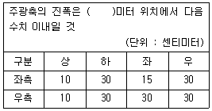
- 3
- 5
- 10
- 12
(정답률: 40%)
98. 홀센서 방식 차량 속도센서의 파형 측정 및 분석 방법은?
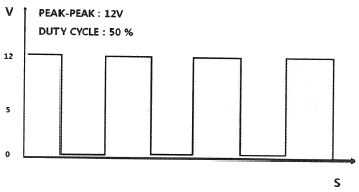
- 차속에 비례한 전류값의 변화를 확인한다.
- 저속에서 고속으로 변속하며 주파수 변화를 확인한다.
- 차량의 속도를 0km/h에서 측정하면서 주파수 변화를 확인한다.
- 피크-피크 전압의 변화는 차속에 비례하기 때문에 측정 시는 배터리를 새것으로 교환하고 측정한다.
(정답률: 42%)
99. 엔진의 기본 점화시기를 결정하는 센서로 고장 시 시동에 영향을 미치는 것은?
- 노크 센서
- 대기압 센서
- 산소 센서
- 크랭크 위치 센서
(정답률: 55%)
100. 기동전동기에 관한 설명으로 틀린 것은?
- 전기자 코일은 입력전류를 증폭하고, 계자코일은 회전력을 발생시킨다.
- 마그네틱 스위치 내 풀인 코일의 단선 시기동전동기가 회전하지 않는다.
- 직권식 기동전동기는 전기자 코일과 계자 코일이 직렬로 연결되어 있다.
- 분권식 기동전동기는 전기자 코일과 계자 코일이 병렬로 연결되어 있다.
(정답률: 29%)
설명: 볼 스크루는 공구의 회전운동을 선형운동으로 변환시켜주는 기계요소로, 고정밀도와 높은 정밀도를 유지할 수 있으며 백래시를 작게 할 수 있어서 정확한 위치 조정이 가능합니다. 또한, 볼 스크루는 고정밀도를 유지하면서도 자동체결이 용이하다는 장점이 있습니다.